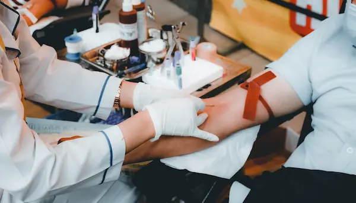

Nossa Missão e Impacto

Projetos e Educação
Nossos projetos de impacto social incluem campanhas educativas e
apoio logístico a hemocentros. Veja nossas ações de conscientização
e como sua contribuição se transforma em vidas salvas na comunidade.
Participe: Voluntariado e Doação

Detalhes da Participação
Seja um Voluntário e ajude em
campanhas e eventos. Para Doar, saiba que sua contribuição apoia
diretamente nossas ações sociais e o desenvolvimento da plataforma.
Transparência e Contato
Como e Onde Doar Sangue
Encontre nosso guia completo de como se
preparar para a doação de sangue. Nossa central de documentos
públicos garante a transparência total sobre a aplicação dos
recursos captados.